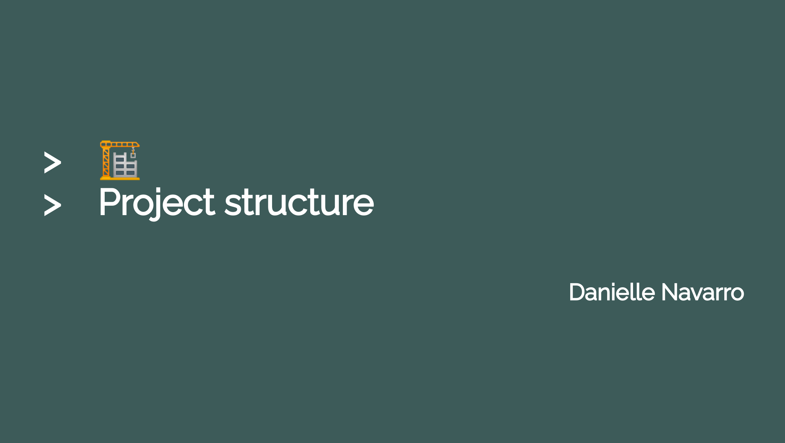

Slide decks by Danielle Navarro
A tour of the Apache Arrow ecosystem for the R community
Invited talk given for Latin-R 2022
Making art from code
A workshop presented at rstudio::conf(2022)
Larger-than-memory workflows with Apache Arrow
A workshop presented to the useR!2022 conference
Introduction to Arrow for R users
A talk given as part of The Data Thread 2022, the inaugural conference of the Apache Arrow community

Project structure
Inspired by Jenny Bryan’s ‘Naming Things’ slide deck, these slides discuss how to name files, introduces file paths, and discusses the basics of project organisation and management.
Starting programming
This is primarily a tutorial on making generative art in R, but in doing so introduces core programming constructs and data structures. It is assumed the user has some previous experience with ggplot2.
Starting functions
This is also an art tutorial that introduces key programming concepts, and follows naturally from the ‘starting programming’ slides. It shows how to write functions and exposes the user to some of the purrr functionality.
Starting R markdown
An introduction to R markdown. The target audience is a novice R user with no previous experience with markdown. Covers the basics of markdown, and illustrates the structure of an R markdown document, including the YAML header. Briefly describes LaTeX equations.
Starting ggplot
An introduction to ggplot2. The target audience is a novice user with no previous experience with R or ggplot2. Does not cover the entire grammar, but helps the user reach the point at which they can make quality data visualisations.
Starting readr
Discusses how to read and write CSV files using the readr package. It is assumed the audience has a little experience with R, but not much. Also introduces the magrittr pipe and the dplyr workflow for group_by() and summarise()
Starting dplyr
An introduction to data wrangling with dplyr. Covers filter(), select(), mutate() and arrange() primarily, but also discusses joins and the pivot_longer() and pivot_wider() functions from tidyr.
Installing R
A walkthrough showing how to install R and RStudio, with examples for Mac, Windows and Ubuntu. The target audience is a novice with a little R experience (e.g., via RStudio Cloud) who now wants to run R locally.